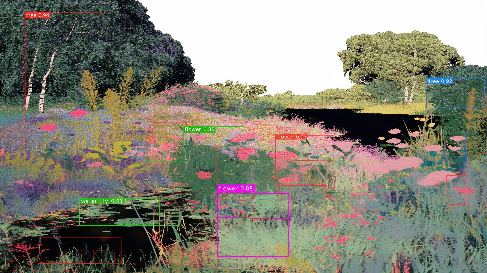

你会学到什么
- LLM 推理的两个阶段（Prefill / Decode）及其截然不同的性能特征
- 为什么推理是 memory-bound 而非 compute-bound
- KV Cache 的原理、痛点与优化（PagedAttention 等）
- 量化的数学原理与工程实践（GPTQ / AWQ / FP8）
- 并行策略：Tensor Parallelism / Pipeline Parallelism
- 进阶技术：Speculative Decoding / FlashAttention / Kernel Fusion
- 主流推理框架对比（vLLM / TGI / TensorRT-LLM / SGLang）
- 推理集群与基础设施：Autoscaling、负载均衡、GPU 资源管理、成本优化
学习路线
01
LLM 推理基础
推理到底慢在哪？
自回归生成的本质、Prefill 与 Decode 两个阶段、为什么推理是 memory-bound、关键性能指标。
开始阅读 →02
KV Cache 与内存优化
显存都去哪了？
KV Cache 的原理与显存开销、PagedAttention、Continuous Batching、MQA / GQA。
开始阅读 →03
量化
精度换速度，到底怎么换？
均匀量化的数学、PTQ 主流方法（GPTQ / AWQ / FP8）、Weight-Only 与反量化开销。
开始阅读 →04
并行与服务架构
大模型怎么切、怎么服务？
TP / PP / DP / SP / CP / EP 六种并行、调度器设计、Prefill-Decode 分离架构与资源配比。
开始阅读 →05
进阶优化技术
还有哪些黑科技？
Speculative Decoding、FlashAttention、Kernel Fusion、Prefix Caching。
开始阅读 →06
推理框架生态
生产环境用什么？
vLLM / TensorRT-LLM / SGLang / TGI / LMDeploy 对比，选型决策树与学习资源。
开始阅读 →07
推理集群与基础设施
怎么把模型跑在“云”上？
Autoscaling、负载均衡与路由、GPU 资源管理、CPU/GPU 混合部署与成本优化。
开始阅读 →建议学习方式
- 按顺序读，每章都有「算法同学容易混淆的直觉」提示。
- 动画可以反复看：它们把每章最核心、最难靠文字建立的直觉做了可视化。
- 每章末尾有思考题，建议自己想一下再看答案。
- 涉及代码的地方会给出最小可运行示例（PyTorch）。
- 第 7 章涉及 K8s / 云服务，建议结合实际部署经验理解。